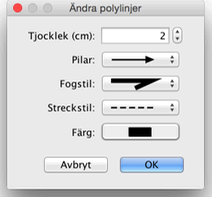

| Redigera polylinjer och kurvor | |||
Du kan ändra en polylinjes plats med musen, efter att du markerat dem i planlösningen. När en polylinje är vald i planlösningen så kan du flytta dess punkter, med indikatorerna vid varje punkt i den valda polylinjen.
När muspekaren är över en av dessa indikatorer ändras den för att indikera att du kan dra och släppa punkten för att flytta den.  I polylinjer-dialogrutan kan du ändra dess tjocklek, om pilar ska ritas i ändorna, stilen för fogade linjer, streckad-stilen och färg. Det sista alternativet i Fogstil-rutan gör att det ritas en kurva istället för linjer. |

|